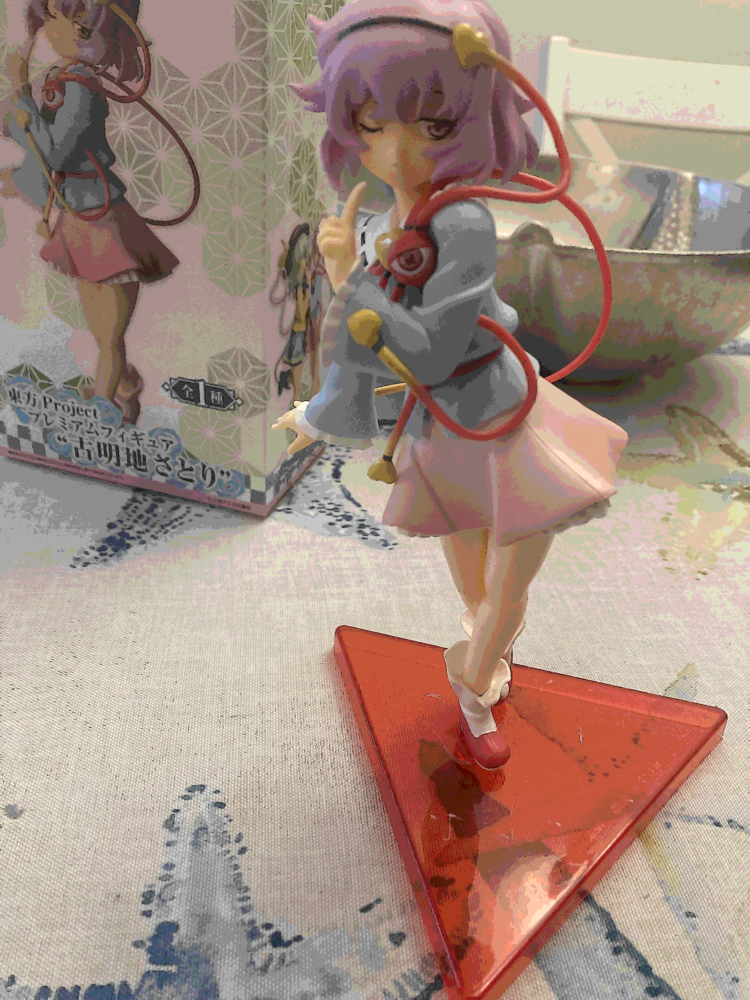
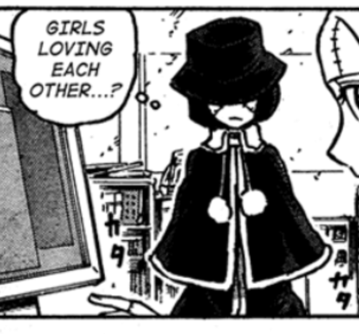

first blog entry, but nobody's going to see it for a while anyways until i open up this site publicly, which i haven't done yet !
first thing, right after when i got home from yet another vacation to fl*rida (hate fl*rida) i got my satori figure in the mail .. she is very awesome and i like her so much so i am happy with my purchase. she was for a very cheap price too, only $24 instead of other sellers selling for wayyyy more. this is a very very good addition to my figure collection.
second thing ! i started reading franken fran (a veri veri cool manga) yesterday, and finished it today. it is really good. i like it a lot and the characters are very silly, the stories vary in quality and i cant say i have a favorite story from the many chapters but i really really like veronica, she is so funny and silly and i like her design a lot. if you are going to read franken fran, warning for gore (a LOT of it, including with animals), violence, sexual violence, cannibalism, nudity, mild sexual content (mostly the volume covers lol), and even more. . .